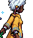

Riley · Neck & shoulders
Still study · Preview only · Game unchanged
New upper-body pose · version 5: a visible bare neck and open neckline replace the crowded collar. The green-sword sleeve now descends vertically from the shoulder rather than projecting backwards. Both sword positions have been changed to suit the new pose.
This is a substantial redesign, not a pixel-preserving cleanup. The robe, face details and sword placement differ from the original. Remaining issues: the red-sword grip is small and the green sword reaches below the feet. Game sprite and animations are unchanged.
Original

Redesigned pose · v5

Neck & shoulder close-up
Original

Redesigned pose · v5

Compare the exposed neck and downward sleeve silhouette. This new pose is preview-only, not an applied character update.